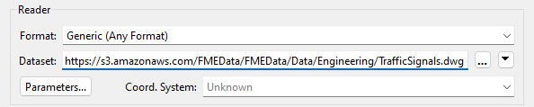
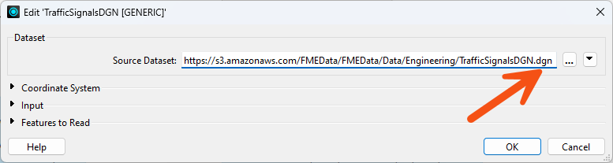
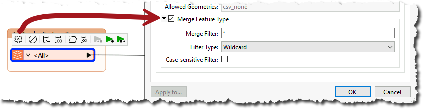
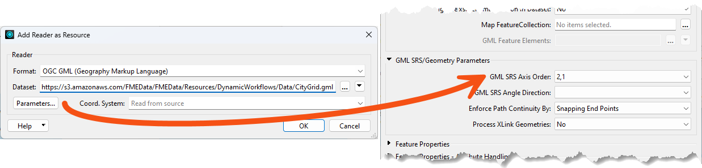
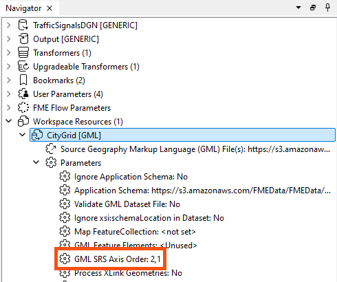

Overview
The Generic reader and the Generic writer allow you to free FME workspaces from format restrictions.
Where all other readers and writers correspond to a specific data format, the Generic reader and the Generic writer do not. The Generic reader can read almost any data format, and the Generic writer can write almost any data format.
In that way, a single workspace can process different data formats without being expressly set up for that format.
The Generic Reader
The Generic reader acts as a wrapper for the true reader, which FME uses during the translation. At runtime, once the actual reader is known, the Generic reader will do its best to represent the intention of the translation in the chosen input format.
The Generic reader takes a file or multiple files, folders, URLs, or database names as the input dataset. If the format requires an input folder, the Generic reader will turn the input filename into a folder by removing the file name part of the path.

The format the Generic reader will use to read from is set to GUESS FROM EXTENSION by default. With this setting, the Generic reader examines the source data's file extension and attempts to guess which reader format to use. This setting provides some flexibility for the workspace, but it can cause issues. Consider that there are three different reader formats that all use the .MDB file extension. FME may guess incorrectly and use the wrong reader format for those files.
An alternative approach is to set the source dataset parameter to a Published Parameter. Then, the end-user can specify which reader format to use, which is safer but requires a bit more effort. To set up specific data flows for a particular format, workspace authors can use the ParameterFetcher transformer to retrieve the format name of the read data and potentially route features to other transformers using this value. The Generic reader reads the features using the underlying reader. See the ParameterFetcher help for more information.
Adding an Additional Reader or a Schema Reader to a Workspace
It is sometimes helpful to pre-configure parameters specific to individual input formats. For example, you must specify connection parameters to read from a database.
You can add a reader or a schema reader to the workspace. The first reader in the workspace will be Generic, containing all the input feature types. The second reader may or may not have feature types, but will communicate any format-specific reader settings to the Generic reader when the Generic reader uses that format.
For example, if you set the Input Format to Microsoft SQL Server Spatial, the Microsoft SQL Server Spatial reader that the Generic reader uses will adopt the format settings specified for the Microsoft SQL Server Spatial reader. Think of it this way: the Generic reader will look for readers matching the input data it receives; if it finds any, it will use their parameters. If it doesn't find any, it will use the defaults.
You use a Generic reader the same as any other reader: by specifying the format in the Add Reader or Generate Workspace dialogs, or in Quick Add:

This source dataset is an AutoCAD DWG dataset, but FME does not know that yet. When you run the workspace, FME examines the file's extension to determine the format.
At a later time, the end-user might then choose a different file - in a completely different format - to be read, like so:

Again, at runtime, FME examines the file extension to identify the data format and then, having discovered it is MicroStation DGN, reads it just as if it were a regular DGN reader.
That way, a single reader can read any data format.
You think there must be a catch, right? Well, it's true. First, this technique only works with file-based formats (it won't work on a database or web format). Second, the Generic reader is not immune to the Unexpected Input Remover, so switching datasets - regardless of format - only works with a compatible schema (see below).
Generic Reader Feature Types
The Unexpected Input Remover is the function in FME that filters incoming data against the list of permitted feature types. If you don't define the incoming data in the workspace, FME will drop it from the translation.
In the previous example, a "TrafficSignals" layer stored the traffic signals data in AutoCAD format, and the workspace names the reader feature type to correspond. But, if the MicroStation file stored data on a different layer, then this would be the result:

FME dropped all 778 records from the translation. So, although the Generic reader allows you to read datasets of different formats, the limitation is that each dataset must have its layers defined as feature types in the workspace.
Of course, an easy way to allow all layers to pass is to set a Merge Feature Type in the Feature Type Properties:

Any data layer, regardless of format, can be passed into the workspace with that setup. Of course, even then, you must be careful about assuming what attributes will be available!
Tips for Using the Generic Reader
The Generic reader does not allow you to specify parameters that define the reader's behavior for any specific format. However, you can bypass this limitation by using the Generic reader and adding a reader as a resource.
For example, when a Generic reader reads GML data, you may want to specify a particular SRS axis order. To accomplish this task, select Build > Readers > Add Reader as Resource from the Workbench menu bar, and specify the GML format and any GML dataset (which dataset does not matter). In the parameters dialog, specify the value you want for GML SRS Axis Order.

When you finish creating the resource reader, it appears in the Navigator under Workspace Resources, along with all of its parameters:

When the workspace runs, the Generic reader uses this resource to read GML data with the desired SRS axis order.
For more information about resource readers, see Adding a Reader as a Resource in the FME Workbench help.
Generic readers only deal with a flexible format, but can also be set up to be flexible with layers using a Merge Filter. However, each dataset the workspace reads must have the same attribute schema. This part is not flexible. Flexible attribute schemas require the use of a Dynamic Translation.